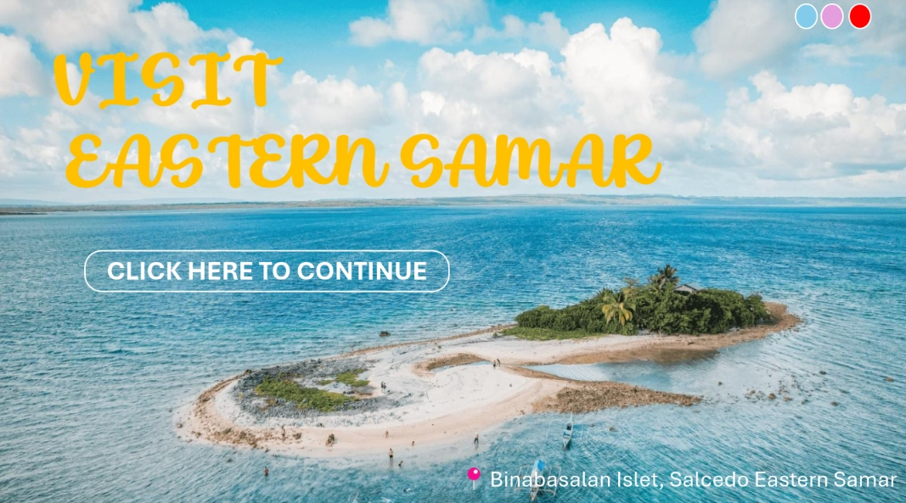

Portfolio — Index 00
Sean Marpit G. Ty
B.S Information Technology
I am an information technology student currently learning programming, user interface design, database creation and management. I’m trying to further develop my knowledge and skills in preparation for an internship in the IT field in the future.
Index 01
About
I am Sean Marpit G. Ty, a second-year information technology student at Eastern Samar State University Main Campus. I am currently focusing on learning programming, user interface design and database creation and management because I’m interested in learning more about how a system or application works and how to create a proper user-friendly interface. I enjoy working on small-scale programming projects and experimenting on creating functioning systems and applications in order to gain experience and apply my knowledge and skills.
Index 02
Skills
Tools
- VS code
- Visual Studios
- Eclipse
Other
- Basic UI design
- Basic Database design
Index 03
Projects

Clinic Appointment System
A system designed to help organize and record appointments, patients data and staff assignments effectively and efficiently. I serve as the lead developer and programmer of this project who mostly coded the system, designed the interface and connect the system to the database.
C#
Windows application form
Visual Studios

Visit Eastern Samar Travel Web
A simple travel website that provides information about the top destinations, place and hidden gems of Eastern Samar that are worth to visit. It is one of the first non-academic websites that im creating as an novice programmer and developer in order to gain experience in creating a website and improve my knowledge and skills in programming, web design and development.
HTML